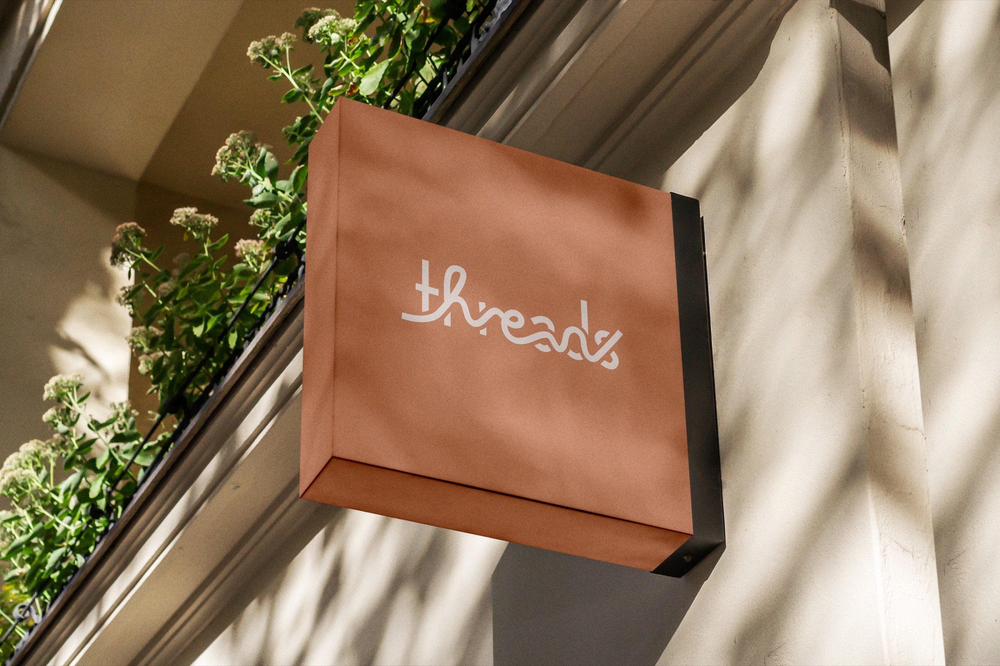
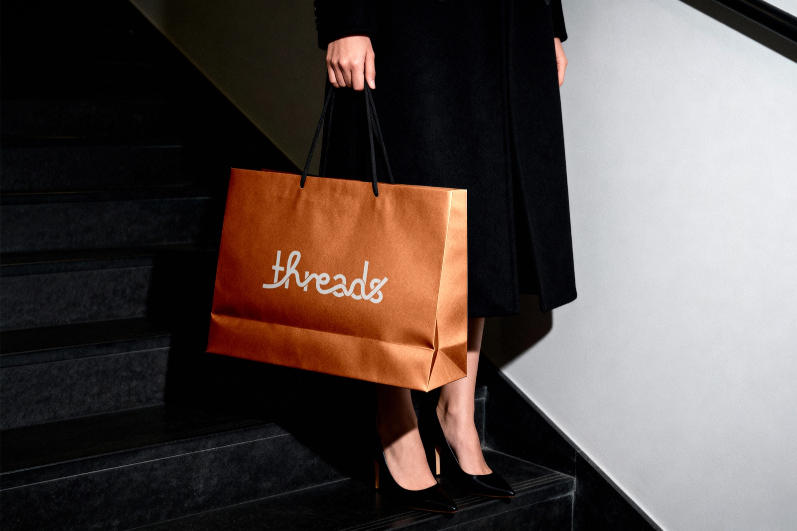
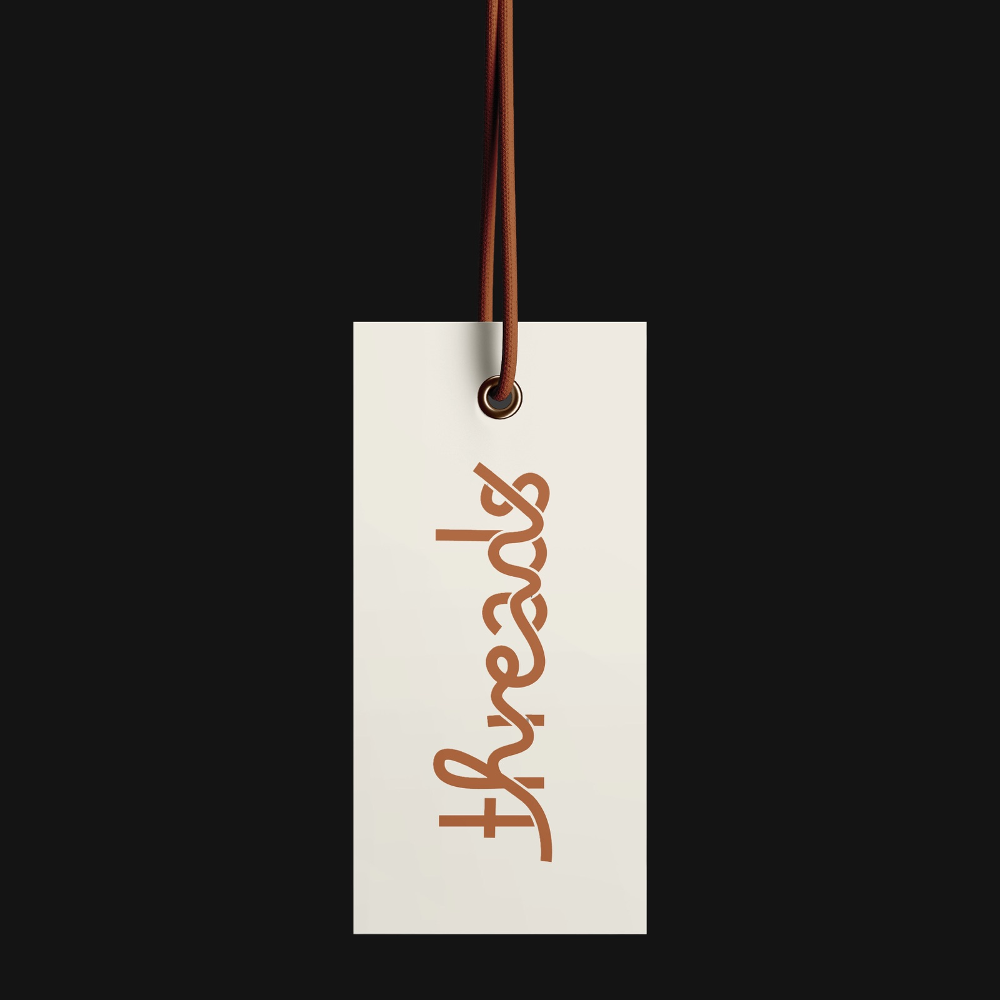

Case study · Branding · 2026
Static + Animated Logotype
Threads is a contemporary clothing retail brand targeting young, fashion conscious shoppers and local trendsetters.
Overview
Challenge
The brief was to reinterpret the Threads logotype for a clothing retailer, making the name feel connected to the physical act of exchanging and wearing garments.
Solution
Rather than treating the name as purely metaphorical, the concept centers on the physical behavior of thread itself, how it loops, pulls, overlaps, and binds garments together.
Outcome
The final identity pairs a continuous-stroke logotype with a motion piece in which a line travels between bags, suggesting an ongoing cycle of clothing exchange.
01 — Sketches
Drawing with one continuous thread
I explored how a single continuous stroke could form the letters while staying legible. Secondary strokes test the idea of threads crossing and weaving, adding movement without obscuring the core wordmark.

03 — Mockups

